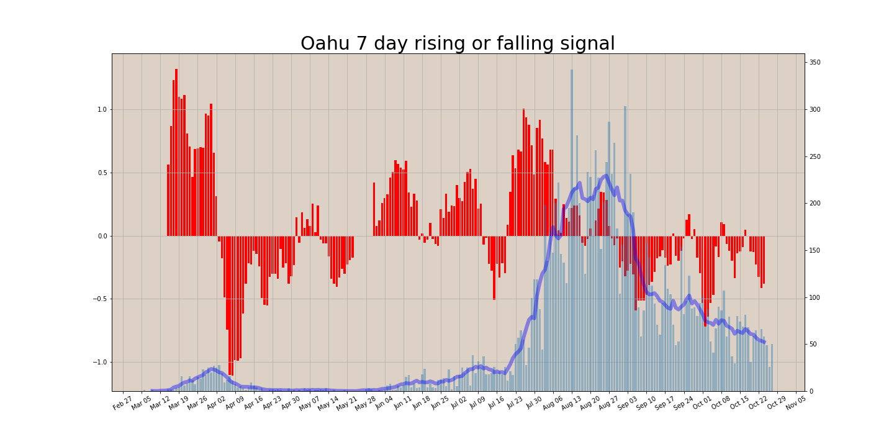

State of Hawaii
Note: on 11/15/2020 DoH skipped a report day and started reporting with an extra day delay. My report dates after 11/15 are one day earlier than Doh report dates.

7 Day Descriptive Stats
| Statewide total | Oahu | Hawaii island | Maui | Kauai | Outside Hawaii | |
|---|---|---|---|---|---|---|
| mean | 79.3 | 56.7 | 4.7 | 11.0 | 3.4 | 3.4 |
| std | 27.8 | 26.5 | 2.6 | 3.8 | 4.8 | 2.2 |
| min | 46.0 | 24.0 | 1.0 | 5.0 | 0.0 | 0.0 |
| max | 122.0 | 98.0 | 9.0 | 16.0 | 14.0 | 7.0 |
| Date | Statewide total | Oahu | Hawaii island | Maui | Kauai | Outside Hawaii |
|---|---|---|---|---|---|---|
| 2021-04-19 | 46 | 24 | 1 | 14 | 0 | 7 |
| 2021-04-20 | 70 | 42 | 6 | 16 | 3 | 3 |
| 2021-04-21 | 102 | 78 | 9 | 8 | 2 | 5 |
| 2021-04-22 | 94 | 73 | 4 | 13 | 0 | 4 |
| 2021-04-23 | 51 | 40 | 4 | 5 | 2 | 0 |
| 2021-04-24 | 122 | 98 | 6 | 12 | 3 | 3 |
| 2021-04-25 | 70 | 42 | 3 | 9 | 14 | 2 |
Here is the data I'm using. daily.csv
DOH made the data that they plot
here
available on their Tableau charts. CSVDownload.csv


Oahu
One Oahu C&C status page


The average rate over the last 2 weeks was about 0.997, std = 0.025. Halving days about 238. Rt (6 day rate) around 0.983.
